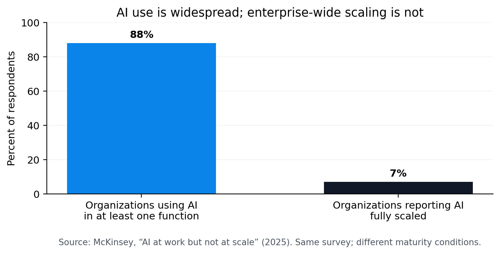

The Enterprise Execution Gap
Why AI Activity Is Not the Same as Governed Outcome Closure
BRAIZ Works LLC
BRAIZ Works Research — WP-02
Version 1.0.0
Document date: September 23, 2026
AI adoption can rise faster than an enterprise's ability to prove that important work is actually finished.
Executive summary
Enterprise AI has moved from experimentation into widespread use. Stanford's 2026 AI Index reports that 88% of surveyed organizations used AI in at least one business function in 2025, while agent deployment remained in the single digits across nearly all business functions. McKinsey's 2025 survey similarly reported broad AI use but only 7% of respondents saying AI had been fully scaled across their organizations. [1][2]

That contrast is not simply an adoption problem. It points to an execution problem.
BRAIZ Works uses the term Enterprise Execution Gap for the distance between AI activity and an enterprise outcome that is demonstrably complete. A system can produce a strong answer, trigger tools, update records, or report success and still leave the organization with unresolved obligations, stale evidence, ambiguous authority, incomplete recovery, or no reliable way to prove that the intended result was reached.
This paper argues for a shift from response-centric AI to outcome-centric AI operations. The central idea is simple:
Enterprise work is not complete because an AI acted. It is complete when the authorized outcome is satisfied, verified, validated, supported by evidence, and formally closed.
BRAIZ Works has previously described this public concept as Verified Completion™: satisfied + verified + validated + proven + closed. [6]
This is not a claim that every workflow requires the same process, tooling, or control depth. It is a claim that consequential AI work needs a clear completion standard that survives scrutiny, change, failure, and handoff.
1. Adoption is not the same as execution maturity
The current enterprise AI story contains two realities at once.
First, adoption is broad and accelerating. Stanford's AI Index reports organizational AI adoption at 88% in 2025, with generative AI used in at least one business function at 70% of organizations. [1] McKinsey reported that 88% of respondents said their organizations were using AI in at least one business function, but only 7% said AI had been fully scaled across the organization. [2]
Second, the standards for trustworthy operational use remain demanding. NIST's AI Risk Management Framework is built around continuous governance, context mapping, measurement, and management across the AI lifecycle. NIST also emphasizes testing before deployment and regularly in operation, documenting results, and using independent review where appropriate to improve testing effectiveness and reduce internal bias or conflicts of interest. [3][4]
The practical implication is that more AI activity does not automatically produce more enterprise closure.
An employee can use an AI assistant every day without the organization having a reliable answer to questions such as:
- What exact business outcome was the system authorized to achieve?
- Which obligations had to be true before the work could be called complete?
- What evidence proves those obligations were satisfied?
- Was the evidence current and tied to the exact version of the work?
- What happened when the system encountered uncertainty or partial failure?
- Who had authority to accept the result?
- Could the organization restore or reconstruct the result after interruption?
These are execution questions, not model-intelligence questions.
2. Defining the Enterprise Execution Gap
The Enterprise Execution Gap is the difference between:
AI activity — generating, recommending, searching, coding, summarizing, planning, calling tools, or attempting tasks;
and
governed outcome closure — reaching an authorized end state where the required result is demonstrably satisfied and the organization can explain why it is safe to rely on that conclusion.
The gap tends to appear in six forms.
2.1 The intent gap
A prompt is not always an outcome contract.
"Analyze this," "build this," or "finish this" can conceal multiple obligations, dependencies, exclusions, approval points, and definitions of done. If those conditions remain implicit, an AI system may optimize for a plausible response instead of the user's actual terminal outcome.
NIST's AI RMF Map function begins with context: intended purpose, beneficial uses, deployment setting, assumptions, limitations, and relevant risks should be understood and documented. [5] The enterprise analogue is straightforward: consequential AI work needs a sufficiently explicit target before execution begins.
2.2 The authority gap
Capability is not authority.
A system may technically be able to send a message, modify a repository, publish a document, change a permission, spend money, or delete data. That does not mean it is authorized to do so.
Enterprise AI needs a reliable distinction between:
- analysis and external action;
- recommendation and approval;
- preparation and publication;
- technical capability and decision rights.
When authority is vague, stale, overly broad, or inferred from unrelated approval, a system can create real-world side effects that are difficult to reverse.
2.3 The evidence gap
A success message is not proof.
For consequential work, evidence should be attributable to the exact subject being evaluated. It should also be current enough to support the claim being made. A test result from an earlier version, a screenshot without source identity, or a summary that cannot be recomputed may be useful context, but it is weaker than evidence bound to the actual final object.
NIST's Measure function calls for rigorous testing and performance assessment, documented results, and repeatable or scalable test, evaluation, verification, and validation processes. [3]
The enterprise question becomes: What evidence would allow a qualified person to independently reproduce or challenge the completion claim?
2.4 The lifecycle gap
Many systems compress nuanced states into a binary: done or not done.
But important work often moves through distinct states: drafted, tested, reviewed, accepted, approved for external use, published, observed, closed. Confusing one state for another creates false completion.
A document can be technically correct but not approved for publication. A software candidate can pass producer tests but not yet pass independent review. A deployment can succeed technically but still be awaiting operational readback.
Lifecycle truth prevents a valid early-stage result from being silently promoted into a later-stage claim.
2.5 The recovery gap
A backup is not the same as recovery.
Enterprise closure should consider what happens when work is interrupted, corrupted, partially executed, or later challenged. A credible recovery posture asks whether a usable backup exists, whether its integrity is known, whether restoration has been tested, and whether the restored state matches what was expected.
The need is especially important for agentic systems because actions can span multiple tools, systems, and external states. A retry after an ambiguous result can create duplication or inconsistent state if the original side effect actually succeeded.
2.6 The assurance gap
The builder should test aggressively, but self-testing and independent review serve different purposes.
A producer is optimized to make the work succeed. An independent reviewer is optimized to challenge whether the evidence actually supports the claim. Combining those roles can create confirmation bias, especially when the same assumptions, tests, and evidence interpretations are reused.
NIST notes that independent review can improve testing effectiveness and mitigate internal biases or conflicts of interest. [3]
For high-consequence work, independence is therefore not bureaucracy. It is a control against self-confirming completion claims.
3. The operational shift: from outputs to outcome closure
A response-centric AI system asks:
Did the model generate a useful answer?
A task-centric agent asks:
Did the system perform the requested actions?
An outcome-centric enterprise system asks:
Is the authorized result actually complete, and can we prove it?
That final question changes the architecture of work.
It encourages teams to define completion conditions before execution, preserve evidence during execution, separate decision rights, test failure paths, maintain version identity, and treat recovery as part of the result rather than an afterthought.
This does not require every workflow to become heavyweight. Controls should scale with consequence. A low-risk drafting task may need little more than a clear instruction and a human review. A public release, production change, financial action, regulated workflow, or irreversible data mutation may require stronger evidence, explicit authorization, recovery, and independent review.
The principle is proportional rigor, not universal ceremony.
4. Seven principles for closing the gap
Principle 1 — Define the outcome before optimizing the work
Completion should be expressed in observable terms.
Instead of "research this market," define what the final result must contain, what sources are acceptable, what uncertainty must be disclosed, and what would make the result unusable.
Instead of "deploy this application," define the required environment, health checks, rollback condition, security posture, and readback required before deployment can be called complete.
Clear completion conditions reduce the chance that an intelligent system solves the wrong problem elegantly.
Principle 2 — Keep authority explicit and local to the action
The safest authorization is specific enough to answer:
- who authorized the action;
- what exact action was authorized;
- which subject/version it applies to;
- which channels or systems are included;
- what is explicitly excluded;
- whether the authority can be reused.
This avoids turning a broad instruction into a license for unrelated external effects.
Principle 3 — Bind evidence to the exact result
Evidence should answer three questions:
- What exact object was evaluated?
- What test or observation was performed?
- What result was actually observed?
Hashes, version IDs, timestamps, manifests, test records, and source identities can help, but no single artifact is enough by itself. A hash proves byte identity, not semantic correctness. A test proves only what it actually tested. A receipt proves only the event it accurately records.
Principle 4 — Make lifecycle states explicit
Organizations should distinguish at least the states that materially change authority or exposure.
For example:
| State | What it means | What it does not mean |
|---|---|---|
| Draft | Work exists | It is correct or approved |
| Producer-qualified | Builder-side checks passed | Independent review passed |
| Independently reviewed | Separate review passed | Owner accepted or published |
| Owner accepted | Decision-maker accepted exact result | External action is authorized |
| Frozen | Exact accepted version is protected from in-place change | It has been deployed or published |
| Published/deployed | External effect occurred | Public/runtime state was verified |
| Closed | Required readback and closeout evidence are complete | Future changes may reuse the same proof |
The labels can vary. The important property is that one state does not silently imply the next.
Principle 5 — Treat recovery as part of completion
Recovery is not only for catastrophic failures. It is also how an organization avoids unsafe retries, evidence loss, and restart ambiguity.
For consequential AI workflows, teams should know the last valid state, what changed, what could have partially succeeded, how to verify that state, and how to resume without depending on one person's memory.
Principle 6 — Separate producer assurance from independent challenge
Producer assurance should be aggressive and repair-oriented. It should search for omissions, stale evidence, broken dependencies, failure cases, and regressions before independent review begins.
Independent review should then test the exact final subject without repairing it. If it fails, the subject returns to the producer as a successor rather than being silently modified inside the review.
This creates a cleaner answer to a basic governance question: Who built it, and who independently challenged the completion claim?
Principle 7 — Change the proof when you change the thing
AI-enabled systems change quickly. A strong process therefore avoids treating yesterday's evidence as permanently valid.
When a material change occurs, determine what proof is actually invalidated. Preserve unaffected evidence where it remains valid, but rerun the tests and reviews affected by the change.
This approach avoids two bad extremes: redoing everything unnecessarily or reusing stale proof because it is convenient.
5. A buyer's test for enterprise AI systems
Enterprises evaluating agentic AI can ask a small set of questions that reveal whether a system is designed for activity or outcome closure.
1. What exactly counts as done?
Look for observable completion conditions rather than a vague assertion that the agent "finished."
2. How does the system prove completion?
Ask what evidence is retained, how it is tied to the exact work, and whether another reviewer can challenge or recompute the result.
3. How are permissions and external actions controlled?
Ask how the system distinguishes preparation from execution and whether high-impact actions require explicit, scoped authority.
4. What happens after partial or ambiguous failure?
Look for idempotency, readback, recovery, and controls against blind retry.
5. How are changes handled?
Ask whether the system preserves predecessor history, identifies affected proof, retests changed surfaces, and produces a traceable successor.
6. Is independent review structurally distinct?
For consequential work, ask whether the same process that produced the result is also the only process that declares it correct.
7. Can the organization reconstruct what happened later?
If the answer depends on a specific chat session, one operator's memory, or an ephemeral interface, the system may be difficult to audit, recover, or trust at scale.
6. What this means for operating models
The Enterprise Execution Gap is not solved by selecting a more capable model alone.
Better models can improve reasoning, drafting, planning, coding, and tool use. Those capabilities matter. But enterprise reliability also depends on operating architecture around the model: authority, context, state, evidence, testing, recovery, change control, review, and lifecycle truth.
This is consistent with the broader direction of AI governance frameworks. NIST's AI RMF treats governance as cross-cutting and risk management as continuous across the lifecycle. [3][5] The NIST Generative AI Profile similarly frames generative-AI risk management across the design, development, use, and evaluation lifecycle. [4]
The practical shift is from asking "How smart is the model?" to asking "What system surrounds the model so the enterprise can safely rely on the result?"
7. The BRAIZ Works position: Verified Completion™
BRAIZ Works' public research uses Verified Completion™ to describe a terminal standard for important AI-enabled work.
The public definition is:
satisfied + verified + validated + proven + closed [6]
This formulation does not publish the private implementation methods used by UBuildOS™. It describes the outcome standard.
The purpose of that distinction is important. Enterprises do not need every internal mechanism of a system exposed in order to demand stronger completion properties. Buyers, operators, and reviewers can ask for clear outcomes, evidence, recovery, authority, and independent assurance without requiring vendors to reveal proprietary implementation details.
The result is a useful separation:
- public standard: what trustworthy completion should demonstrate;
- private implementation: how a particular system achieves it.
That separation supports both enterprise diligence and legitimate intellectual-property protection.
8. A practical maturity model
Organizations can use a simple five-level maturity model to assess AI execution.
Level 1 — Response
The system generates an answer or artifact. Quality is evaluated mainly by usefulness or plausibility.
Level 2 — Task
The system can carry out multi-step work and interact with tools. Success is evaluated mainly by whether expected actions occurred.
Level 3 — Controlled task
The system operates with defined scope, permissions, and checks. Important actions have clearer boundaries.
Level 4 — Evidence-backed outcome
Completion conditions are explicit, evidence is retained, important claims can be verified, and failures have recovery paths.
Level 5 — Governed outcome closure
The exact result has satisfied its completion conditions, relevant evidence is current, review and authority states are explicit, recovery is proven to the required level, and the work is formally closed.
This is not a universal certification scale. It is a management lens for distinguishing more agent activity from more reliable enterprise completion.
9. Why the distinction matters now
The timing matters because AI capability and adoption are advancing faster than many organizations' operating controls.
Stanford's 2026 AI Index notes both rapid organizational adoption and early agent deployment, while also documenting continuing challenges in responsible-AI governance and measurement. [1][7] McKinsey's 2026 work on moving from adoption to impact argues that individual use alone does not automatically create enterprise value when the surrounding organization and workflows remain unchanged. [8]
As AI systems become more capable of acting across software, data, communications, and business processes, the cost of a weak completion standard rises.
A wrong answer is one class of failure. A system that confidently reports completion after the wrong action, against stale evidence, without required authority, or after an ambiguous side effect is another.
Enterprise architecture should be designed for the second class as deliberately as model developers design for the first.
10. Conclusion
The next stage of enterprise AI is not only about generating better outputs. It is about building operating systems around intelligence that can carry authorized work to a result the organization can safely rely on.
The Enterprise Execution Gap appears when activity outruns closure: when prompts substitute for outcome contracts, capability substitutes for authority, status substitutes for evidence, backup substitutes for recovery, or self-attestation substitutes for independent challenge.
Closing that gap requires a different question at the end of AI-enabled work:
Not "Did the AI do something useful?" but "Is the authorized outcome actually complete, and can we prove it?"
That is the shift from AI activity to governed outcome closure.
References
[1] Stanford Institute for Human-Centered Artificial Intelligence. The 2026 AI Index Report — Economy. 2026. https://hai.stanford.edu/ai-index/2026-ai-index-report/economy
[2] McKinsey & Company. AI at work but not at scale. December 10, 2025. https://www.mckinsey.com/featured-insights/charts/ai-at-work-but-not-at-scale
[3] Tabassi, E. Artificial Intelligence Risk Management Framework (AI RMF 1.0). NIST AI 100-1. National Institute of Standards and Technology, 2023. https://doi.org/10.6028/NIST.AI.100-1
[4] Autio, C., Schwartz, R., Dunietz, J., Jain, S., Stanley, M., Tabassi, E., Hall, P., Roberts, K. Artificial Intelligence Risk Management Framework: Generative Artificial Intelligence Profile. NIST AI 600-1, 2024; NIST page updated April 8, 2026. https://doi.org/10.6028/NIST.AI.600-1
[5] National Institute of Standards and Technology. NIST AI RMF Playbook. https://www.nist.gov/itl/ai-risk-management-framework/nist-ai-rmf-playbook
[6] BRAIZ Works LLC. UBuildOS Verified Completion™ Thesis v1.0.5. September 15, 2026. DOI: https://doi.org/10.5281/zenodo.22775537 ; public repository: https://github.com/BRAIZ-Works/ubuildos-verified-completion-thesis
[7] Stanford Institute for Human-Centered Artificial Intelligence. The 2026 AI Index Report — Responsible AI. 2026. https://hai.stanford.edu/ai-index/2026-ai-index-report/responsible-ai
[8] McKinsey & Company. From adoption to impact: Three horizons of AI transformation. July 8, 2026. https://www.mckinsey.com/capabilities/people-and-organization/our-insights/from-adoption-to-impact-three-horizons-of-ai-transformation
About BRAIZ Works
BRAIZ Works LLC develops UBuildOS™, an AI-native production operating system focused on turning authorized outcomes into structured, evidence-backed completion.
This paper presents public-safe research and operating principles. It does not disclose private UBuildOS prompts, control-plane implementation, internal evidence schemas, proprietary routing rules, protected recovery mechanics, or reconstruction-sensitive architecture.
© 2026 BRAIZ Works LLC. All rights reserved.